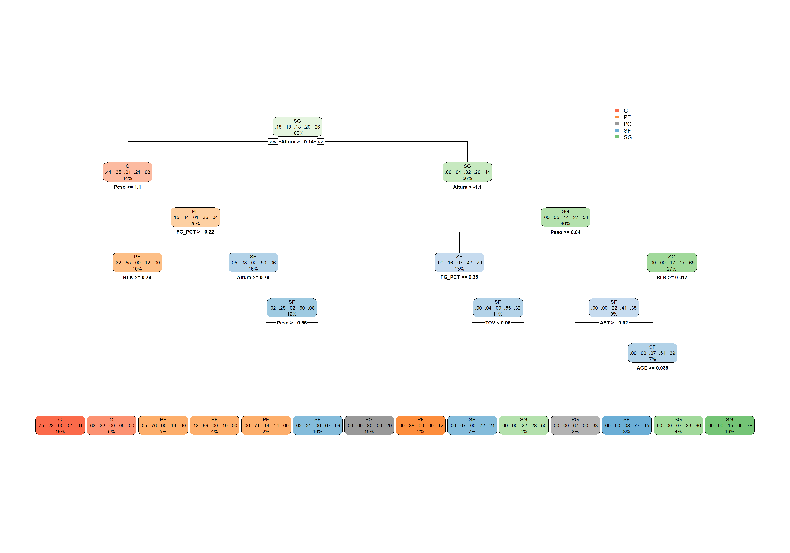
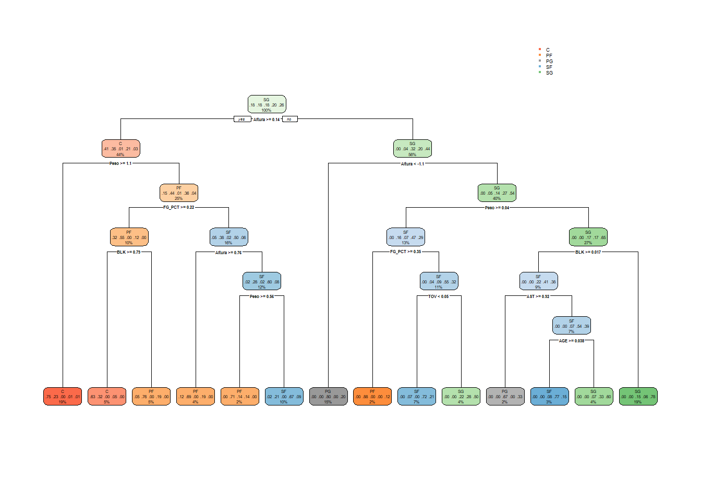
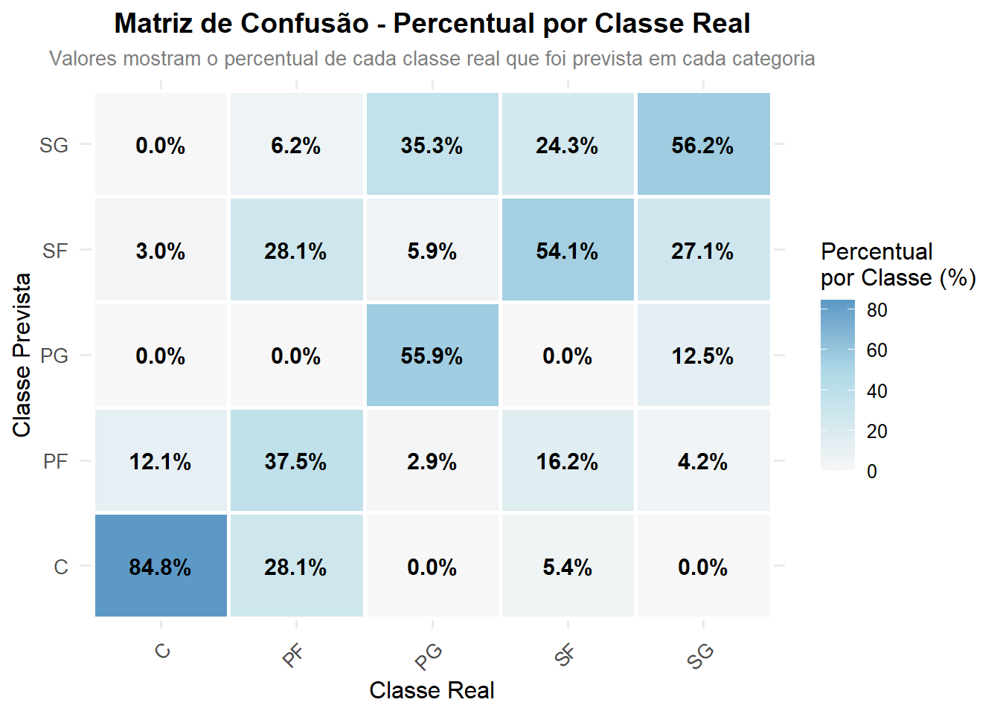
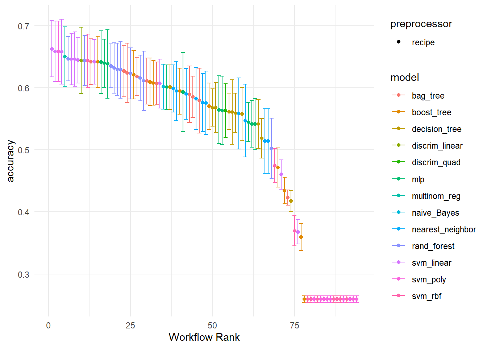
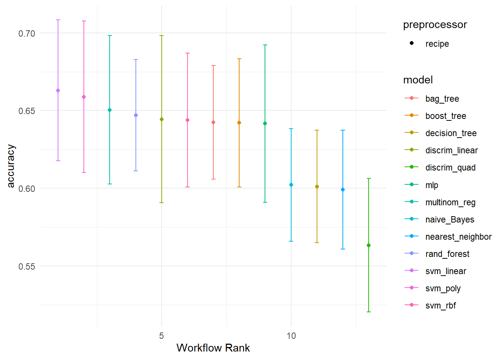
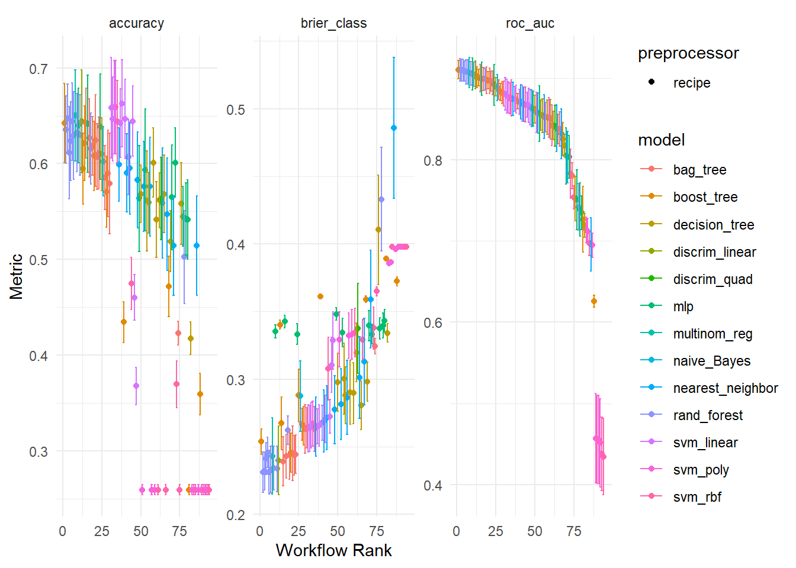

Mostrar código
set.seed(16723)
dados_analise_split <- initial_split(dados_analise, prop = .7, strata = Position)
train_data <- training(dados_analise_split)
test_data <- testing(dados_analise_split)set.seed(16723)
dados_analise_split <- initial_split(dados_analise, prop = .7, strata = Position)
train_data <- training(dados_analise_split)
test_data <- testing(dados_analise_split)dados_analise_rec <- recipe(Position ~ ., data = train_data) |>
step_mutate(
AST_TOV_RATIO = AST / (TOV + 0.1),
REB_HEIGHT_INTER = REB * Altura,
PLAYMAKER_SCORE = AST - TOV,
RIM_PROTECT = REB + BLK,
PTS_EFF = PTS * FG_PCT) |>
step_YeoJohnson(all_numeric_predictors()) |> # Transformação Yeo-Johnson
step_normalize(all_numeric_predictors()) |> # normaliza variáveis numéricas para terem média 0 e variância 1
step_corr(all_numeric_predictors(), threshold = 0.8,
method = "spearman"
) # remove preditores que tenham alta correlação com algum outro preditorprepped_data <- dados_analise_rec |> # usa a receita
prep() |> # aplica a receita no conjunto de treinamento
juice()# extrai apenas o dataframe preprocessadodtree_spec <- decision_tree() %>% # Decision tree
set_engine(engine = "rpart") %>%
set_mode("classification")
wf_dtree <- workflow() %>%
add_recipe(dados_analise_rec) %>%
add_model(dtree_spec)
fit_dtree <- wf_dtree %>%
fit(data = train_data)
fit_dtree %>%
extract_fit_engine() n= 421
node), split, n, loss, yval, (yprob)
* denotes terminal node
1) root 421 312 SG (0.18 0.18 0.18 0.2 0.26)
2) Altura>=0.1437162 186 110 C (0.41 0.35 0.0054 0.21 0.027)
4) Peso>=1.053671 80 20 C (0.75 0.23 0 0.012 0.012) *
5) Peso< 1.053671 106 59 PF (0.15 0.44 0.0094 0.36 0.038)
10) FG_PCT>=0.224644 40 18 PF (0.32 0.55 0 0.12 0)
20) BLK>=0.7899962 19 7 C (0.63 0.32 0 0.053 0) *
21) BLK< 0.7899962 21 5 PF (0.048 0.76 0 0.19 0) *
11) FG_PCT< 0.224644 66 33 SF (0.045 0.38 0.015 0.5 0.061)
22) Altura>=0.7554805 16 5 PF (0.12 0.69 0 0.19 0) *
23) Altura< 0.7554805 50 20 SF (0.02 0.28 0.02 0.6 0.08)
46) Peso>=0.5633205 7 2 PF (0 0.71 0.14 0.14 0) *
47) Peso< 0.5633205 43 14 SF (0.023 0.21 0 0.67 0.093) *
3) Altura< 0.1437162 235 131 SG (0 0.038 0.32 0.2 0.44)
6) Altura< -1.058227 65 13 PG (0 0 0.8 0 0.2) *
7) Altura>=-1.058227 170 79 SG (0 0.053 0.14 0.27 0.54)
14) Peso>=0.04025512 55 29 SF (0 0.16 0.073 0.47 0.29)
28) FG_PCT>=0.3505043 8 1 PF (0 0.88 0 0 0.12) *
29) FG_PCT< 0.3505043 47 21 SF (0 0.043 0.085 0.55 0.32)
58) TOV< 0.0502942 29 8 SF (0 0.069 0 0.72 0.21) *
59) TOV>=0.0502942 18 9 SG (0 0 0.22 0.28 0.5) *
15) Peso< 0.04025512 115 40 SG (0 0 0.17 0.17 0.65)
30) BLK>=0.01713028 37 22 SF (0 0 0.22 0.41 0.38)
60) AST>=0.9157183 9 3 PG (0 0 0.67 0 0.33) *
61) AST< 0.9157183 28 13 SF (0 0 0.071 0.54 0.39)
122) AGE>=0.03813754 13 3 SF (0 0 0.077 0.77 0.15) *
123) AGE< 0.03813754 15 6 SG (0 0 0.067 0.33 0.6) *
31) BLK< 0.01713028 78 17 SG (0 0 0.15 0.064 0.78) *fit_dtree %>%
extract_fit_engine() %>%
rpart.plot(roundint = FALSE)
# Criar uma função reutilizável
plot_confusion_matrix_percent <- function(model, new_data, truth_col, pred_col) {
# Calcular matriz de confusão
cm <- model %>%
augment(new_data = new_data) %>%
conf_mat(truth = {{ truth_col }}, estimate = {{ pred_col }})
# Preparar dados para o heatmap (percentual por linha - recomendado)
total_obs <- sum(cm$table)
cm_plot_data <- cm$table %>%
as.data.frame() %>%
rename(Prediction = Prediction, Truth = Truth, Count = Freq) %>%
group_by(Truth) %>%
mutate(
percent = (Count / sum(Count)) * 100,
label = sprintf("%.1f%%", percent)
) %>%
ungroup()
# Criar o gráfico
p <- ggplot(cm_plot_data, aes(x = Truth, y = Prediction, fill = percent)) +
geom_tile(color = "white", size = 1) +
geom_text(aes(label = label), size = 4, color = "black", fontface = "bold") +
scale_fill_gradient2(
low = "#f7f7f7",
mid = "#add8e6",
high = "#2c7fb8",
midpoint = 50,
name = "Percentual\npor Classe (%)"
) +
labs(
title = "Matriz de Confusão - Percentual por Classe Real",
subtitle = "Valores mostram o percentual de cada classe real que foi prevista em cada categoria",
x = "Classe Real",
y = "Classe Prevista"
) +
theme_minimal(base_size = 12) +
theme(
axis.text.x = element_text(angle = 45, hjust = 1, size = 10),
axis.text.y = element_text(size = 10),
plot.title = element_text(hjust = 0.5, face = "bold", size = 14),
plot.subtitle = element_text(hjust = 0.5, size = 10, color = "gray50"),
legend.position = "right"
)
return(p)
}
# Usar a função
plot_confusion_matrix_percent(
model = fit_dtree,
new_data = test_data,
truth_col = Position,
pred_col = .pred_class
)
metricas<- metric_set(accuracy, sens, recall, spec, precision, ppv, npv)
bind_rows(
fit_dtree %>%
augment(new_data = train_data) %>%
mutate(dataset = "Treino"),
fit_dtree %>%
augment(new_data = test_data) %>%
mutate(dataset = "Teste")
) %>%
group_by(dataset) %>%
metricas(truth = Position, estimate = .pred_class) %>%
dplyr::select(dataset, .metric, .estimate) %>%
pivot_wider(names_from = .metric, values_from = .estimate) %>%
mutate(across(-dataset, round, 3)) %>%
gt()| dataset | accuracy | sens | recall | spec | precision | ppv | npv |
|---|---|---|---|---|---|---|---|
| Teste | 0.576 | 0.577 | 0.577 | 0.892 | 0.588 | 0.588 | 0.893 |
| Treino | 0.732 | 0.732 | 0.732 | 0.932 | 0.736 | 0.736 | 0.933 |
Utilizando o método k-fold cross validation para construir um conjunto de validação com k-folds. Considerando k = 10.
cv_folds <- vfold_cv(train_data, v = 10, strata = Position)dtreep_spec <- decision_tree(cost_complexity = tune()) %>% # Decision tree
set_engine(engine = "rpart") %>%
set_mode("classification")
wf_dtreep <- workflow() %>%
add_recipe(dados_analise_rec) %>%
add_model(dtreep_spec)
ctrl <- control_grid(save_pred = TRUE)
my_metrics<- metric_set(accuracy, sens, spec, precision)
dtreep_res <- wf_dtreep %>%
tune_grid(
resamples = cv_folds,
grid = 10,
control = ctrl,
metrics = my_metrics
)
best_dtreep_res <- dtreep_res %>%
select_best(metric = "accuracy")
best_dtreep_res# A tibble: 1 × 2
cost_complexity .config
<dbl> <chr>
1 0.00943 pre0_mod09_post0fit_dtreep <- wf_dtreep %>%
finalize_workflow(best_dtreep_res) %>%
fit(data = train_data)
fit_dtreep %>%
extract_fit_engine() n= 421
node), split, n, loss, yval, (yprob)
* denotes terminal node
1) root 421 312 SG (0.18 0.18 0.18 0.2 0.26)
2) Altura>=0.1437162 186 110 C (0.41 0.35 0.0054 0.21 0.027)
4) Peso>=1.053671 80 20 C (0.75 0.23 0 0.012 0.012) *
5) Peso< 1.053671 106 59 PF (0.15 0.44 0.0094 0.36 0.038)
10) FG_PCT>=0.224644 40 18 PF (0.32 0.55 0 0.12 0)
20) BLK>=0.7899962 19 7 C (0.63 0.32 0 0.053 0) *
21) BLK< 0.7899962 21 5 PF (0.048 0.76 0 0.19 0) *
11) FG_PCT< 0.224644 66 33 SF (0.045 0.38 0.015 0.5 0.061)
22) Altura>=0.7554805 16 5 PF (0.12 0.69 0 0.19 0) *
23) Altura< 0.7554805 50 20 SF (0.02 0.28 0.02 0.6 0.08)
46) Peso>=0.5633205 7 2 PF (0 0.71 0.14 0.14 0) *
47) Peso< 0.5633205 43 14 SF (0.023 0.21 0 0.67 0.093) *
3) Altura< 0.1437162 235 131 SG (0 0.038 0.32 0.2 0.44)
6) Altura< -1.058227 65 13 PG (0 0 0.8 0 0.2) *
7) Altura>=-1.058227 170 79 SG (0 0.053 0.14 0.27 0.54)
14) Peso>=0.04025512 55 29 SF (0 0.16 0.073 0.47 0.29)
28) FG_PCT>=0.3505043 8 1 PF (0 0.88 0 0 0.12) *
29) FG_PCT< 0.3505043 47 21 SF (0 0.043 0.085 0.55 0.32)
58) TOV< 0.0502942 29 8 SF (0 0.069 0 0.72 0.21) *
59) TOV>=0.0502942 18 9 SG (0 0 0.22 0.28 0.5) *
15) Peso< 0.04025512 115 40 SG (0 0 0.17 0.17 0.65)
30) BLK>=0.01713028 37 22 SF (0 0 0.22 0.41 0.38)
60) AST>=0.9157183 9 3 PG (0 0 0.67 0 0.33) *
61) AST< 0.9157183 28 13 SF (0 0 0.071 0.54 0.39)
122) AGE>=0.03813754 13 3 SF (0 0 0.077 0.77 0.15) *
123) AGE< 0.03813754 15 6 SG (0 0 0.067 0.33 0.6) *
31) BLK< 0.01713028 78 17 SG (0 0 0.15 0.064 0.78) *fit_dtreep %>%
extract_fit_engine() %>%
rpart.plot(roundint = FALSE)
# Criar uma função reutilizável
plot_confusion_matrix_percent <- function(model, new_data, truth_col, pred_col) {
# Calcular matriz de confusão
cm <- model %>%
augment(new_data = new_data) %>%
conf_mat(truth = {{ truth_col }}, estimate = {{ pred_col }})
# Preparar dados para o heatmap (percentual por linha - recomendado)
total_obs <- sum(cm$table)
cm_plot_data <- cm$table %>%
as.data.frame() %>%
rename(Prediction = Prediction, Truth = Truth, Count = Freq) %>%
group_by(Truth) %>%
mutate(
percent = (Count / sum(Count)) * 100,
label = sprintf("%.1f%%", percent)
) %>%
ungroup()
# Criar o gráfico
p <- ggplot(cm_plot_data, aes(x = Truth, y = Prediction, fill = percent)) +
geom_tile(color = "white", size = 1) +
geom_text(aes(label = label), size = 4, color = "black", fontface = "bold") +
scale_fill_gradient2(
low = "#f7f7f7",
mid = "#add8e6",
high = "#2c7fb8",
midpoint = 50,
name = "Percentual\npor Classe (%)"
) +
labs(
title = "Matriz de Confusão - Percentual por Classe Real",
subtitle = "Valores mostram o percentual de cada classe real que foi prevista em cada categoria",
x = "Classe Real",
y = "Classe Prevista"
) +
theme_minimal(base_size = 12) +
theme(
axis.text.x = element_text(angle = 45, hjust = 1, size = 10),
axis.text.y = element_text(size = 10),
plot.title = element_text(hjust = 0.5, face = "bold", size = 14),
plot.subtitle = element_text(hjust = 0.5, size = 10, color = "gray50"),
legend.position = "right"
)
return(p)
}
# Usar a função
plot_confusion_matrix_percent(
model = fit_dtreep,
new_data = test_data,
truth_col = Position,
pred_col = .pred_class
)
metricas<- metric_set(accuracy, sens, recall, spec, precision, ppv, npv)
bind_rows(
fit_dtreep %>%
augment(new_data = train_data) %>%
mutate(dataset = "Treino"),
fit_dtreep %>%
augment(new_data = test_data) %>%
mutate(dataset = "Teste")
) %>%
group_by(dataset) %>%
metricas(truth = Position, estimate = .pred_class) %>%
dplyr::select(dataset, .metric, .estimate) %>%
pivot_wider(names_from = .metric, values_from = .estimate) %>%
mutate(across(-dataset, round, 3)) %>%
gt()| dataset | accuracy | sens | recall | spec | precision | ppv | npv |
|---|---|---|---|---|---|---|---|
| Teste | 0.576 | 0.577 | 0.577 | 0.892 | 0.588 | 0.588 | 0.893 |
| Treino | 0.732 | 0.732 | 0.732 | 0.932 | 0.736 | 0.736 | 0.933 |
knn_spec <- nearest_neighbor(neighbors = tune()) %>% # K-NN
set_engine("kknn")%>%
set_mode("classification")
nbayes_spec <- naive_Bayes() %>% # Naive Bayes
set_engine("naivebayes") %>%
set_mode("classification")
multinom_spec <- multinom_reg() %>% # Reg Multinominal
set_engine("nnet") %>%
set_mode("classification")
lda_spec <- discrim_linear() %>% # Linear discriminant analysis
set_engine("MASS") %>%
set_mode("classification")
qda_spec <- discrim_quad() %>% # Quadratic discriminant analysis
set_engine("MASS") %>%
set_mode("classification")
dt_spec <- decision_tree(cost_complexity = tune(),
min_n = tune(),
tree_depth = tune()) %>% # Decision tree
set_engine(engine = "rpart") %>%
set_mode("classification")
bt_spec <- bag_tree(cost_complexity = tune(),
min_n = tune(),
tree_depth = tune()) %>% # Bagged trees
set_engine("rpart") %>%
set_mode("classification")
rf_spec <- rand_forest(mtry = tune(),
min_n = tune(),
trees = tune()) %>% # Random forest
set_engine(engine = "ranger") %>%
set_mode("classification")
xgb_spec <- boost_tree(tree_depth = tune(),
learn_rate = tune(),
loss_reduction = tune(),
min_n = tune(),
sample_size = tune(),
trees = tune(),
mtry = tune()) %>% # Boosted trees
set_engine(engine = "xgboost") %>%
set_mode("classification")
lsvm_spec <- svm_linear(cost = tune(),
margin = tune()) %>% # Linear SVM
set_engine(engine = "kernlab") %>%
set_mode("classification")
rsvm_spec <- svm_rbf(cost = tune(),
rbf_sigma = tune(),
margin = tune()) %>% # RBF/Gaussian kernel SVM
set_engine(engine = "kernlab") %>%
set_mode("classification")
psvm_spec <- svm_poly(cost = tune(),
degree = tune(),
scale_factor = tune(),
margin = tune()) %>% # Polynomial kernel SVM
set_engine("kernlab") %>%
set_mode("classification")
nn_spec <- mlp(
hidden_units = tune(),
penalty = tune(),
epochs = tune()
) %>%
set_engine("nnet") %>% # Multilayer perceptron
set_mode("classification")wf = workflow_set(
preproc = list(dados_analise_rec),
models = list(
knn_fit = knn_spec,
nbayes_fit = nbayes_spec,
linear_fit = multinom_spec,
lda_fit = lda_spec,
qda_fit = qda_spec,
dt_fit = dt_spec,
bt_fit = bt_spec,
rf_fit = rf_spec,
xgb_fit = xgb_spec,
lsvm_fit = lsvm_spec,
rsvm_fit = rsvm_spec,
psvm_fit = psvm_spec,
nn_fit =nn_spec
)
) %>%
mutate(wflow_id = gsub("(recipe_)", "", wflow_id))grid_ctrl = control_grid(
save_pred = TRUE,
parallel_over = "resamples",
save_workflow = TRUE
)
grid_results = wf %>%
workflow_map(
seed = 16723,
resamples = cv_folds,
grid = 10,
control = grid_ctrl
)maximum number of iterations reached 0.003195239 0.003194062maximum number of iterations reached 0.008655565 -0.008649812maximum number of iterations reached 0.01038781 -0.01040369maximum number of iterations reached 0.01019818 -0.01015684maximum number of iterations reached 0.002649036 -0.002647937maximum number of iterations reached 0.008751227 -0.008700896maximum number of iterations reached 0.008631521 -0.008608216maximum number of iterations reached 0.003005049 -0.003002272maximum number of iterations reached 0.002825096 -0.002823819maximum number of iterations reached 1.209277e-05 1.209274e-05maximum number of iterations reached 4.754715e-05 -4.754693e-05maximum number of iterations reached 0.0001080432 -0.0001080427maximum number of iterations reached 7.746168e-05 -7.746118e-05maximum number of iterations reached 4.012117e-05 -4.01211e-05maximum number of iterations reached 4.352214e-05 -4.352197e-05maximum number of iterations reached 1.338855e-05 -1.338854e-05maximum number of iterations reached 1.252952e-05 -1.25295e-05maximum number of iterations reached 2.351756e-05 -2.339509e-05maximum number of iterations reached 2.663806e-05 -2.640548e-05maximum number of iterations reached 0.0001042947 -0.0001038821maximum number of iterations reached 0.003462974 0.003461894maximum number of iterations reached 0.008831962 -0.008844296maximum number of iterations reached 0.01053934 -0.01051723maximum number of iterations reached 0.01010825 -0.01008447maximum number of iterations reached 0.002140493 -0.002139742maximum number of iterations reached 0.007994329 -0.0079484maximum number of iterations reached 0.008493884 -0.008465149maximum number of iterations reached 0.00337987 -0.003377226maximum number of iterations reached 0.002739371 -0.002738173maximum number of iterations reached 1.30704e-05 1.307038e-05maximum number of iterations reached 4.858019e-05 -4.857999e-05maximum number of iterations reached 0.0001100874 -0.0001100868maximum number of iterations reached 7.272231e-05 -7.272185e-05maximum number of iterations reached 3.69382e-05 -3.693813e-05maximum number of iterations reached 4.328872e-05 -4.328856e-05maximum number of iterations reached 1.538752e-05 -1.53875e-05maximum number of iterations reached 1.251804e-05 -1.251804e-05maximum number of iterations reached 0.003060944 0.003060288maximum number of iterations reached 0.008800944 -0.008792798maximum number of iterations reached 0.01050246 -0.010471maximum number of iterations reached 0.01003073 -0.01001323maximum number of iterations reached 0.00201305 -0.002012342maximum number of iterations reached 0.008202787 -0.008161795maximum number of iterations reached 0.009093328 -0.009073607maximum number of iterations reached 0.003809674 -0.003805888maximum number of iterations reached 0.002534203 -0.002533154maximum number of iterations reached 1.234963e-05 1.23496e-05maximum number of iterations reached 4.472996e-05 -4.472976e-05maximum number of iterations reached 0.0001054468 -0.0001054463maximum number of iterations reached 7.551474e-05 -7.551427e-05maximum number of iterations reached 3.845526e-05 -3.84552e-05maximum number of iterations reached 4.589152e-05 -4.589133e-05maximum number of iterations reached 1.534632e-05 -1.534631e-05maximum number of iterations reached 1.142435e-05 -1.142434e-05maximum number of iterations reached 2.330959e-05 -2.312376e-05maximum number of iterations reached 1.872281e-05 -1.864786e-05maximum number of iterations reached 0.003714562 0.003713087maximum number of iterations reached 0.008885488 -0.008891804maximum number of iterations reached 0.01030235 -0.01031391maximum number of iterations reached 0.01021705 -0.01017653maximum number of iterations reached 0.001898679 -0.001898017maximum number of iterations reached 0.007943717 -0.007899741maximum number of iterations reached 0.009269013 -0.009243702maximum number of iterations reached 0.003566394 -0.003562623maximum number of iterations reached 0.003365979 -0.003364198maximum number of iterations reached 1.382567e-05 1.382563e-05maximum number of iterations reached 4.742086e-05 -4.742066e-05maximum number of iterations reached 0.0001091005 -0.0001090999maximum number of iterations reached 7.380417e-05 -7.380371e-05maximum number of iterations reached 3.842188e-05 -3.84218e-05maximum number of iterations reached 4.785323e-05 -4.7853e-05maximum number of iterations reached 1.638869e-05 -1.638867e-05maximum number of iterations reached 1.394108e-05 -1.394106e-05maximum number of iterations reached 2.072271e-05 -2.062772e-05maximum number of iterations reached 1.905908e-05 -1.890065e-05maximum number of iterations reached 4.099218e-05 -4.081533e-05maximum number of iterations reached 0.008844958 -0.008846774maximum number of iterations reached 0.01033645 -0.01033475maximum number of iterations reached 0.01008786 -0.01007634maximum number of iterations reached 0.002192555 -0.002191855maximum number of iterations reached 0.008605993 -0.008557801maximum number of iterations reached 0.009038254 -0.009019071maximum number of iterations reached 0.003289348 -0.003286484maximum number of iterations reached 0.003231162 -0.00322944maximum number of iterations reached 4.690229e-05 -4.690208e-05maximum number of iterations reached 0.0001100967 -0.0001100962maximum number of iterations reached 7.759496e-05 -7.759442e-05maximum number of iterations reached 4.157393e-05 -4.157385e-05maximum number of iterations reached 4.648544e-05 -4.648525e-05maximum number of iterations reached 1.378399e-05 -1.378397e-05maximum number of iterations reached 1.475798e-05 -1.475797e-05maximum number of iterations reached 4.618052e-05 -4.598898e-05maximum number of iterations reached 0.008635726 -0.008644322maximum number of iterations reached 0.01028499 -0.01028975maximum number of iterations reached 0.01015927 -0.01014282maximum number of iterations reached 0.00210021 -0.002099495maximum number of iterations reached 0.00863506 -0.008581458maximum number of iterations reached 0.009095661 -0.009067034maximum number of iterations reached 0.003814489 -0.003810887maximum number of iterations reached 0.003368794 -0.003367017maximum number of iterations reached 4.570994e-05 -4.570975e-05maximum number of iterations reached 0.0001080805 -0.00010808maximum number of iterations reached 8.107143e-05 -8.107085e-05maximum number of iterations reached 4.159694e-05 -4.159684e-05maximum number of iterations reached 4.793158e-05 -4.793138e-05maximum number of iterations reached 1.578236e-05 -1.578234e-05maximum number of iterations reached 1.424593e-05 -1.424591e-05maximum number of iterations reached 2.231943e-05 -2.221898e-05maximum number of iterations reached 1.163045e-05 -1.157765e-05maximum number of iterations reached 1.683982e-05 -8.753553e-13maximum number of iterations reached 1.319986e-05 -4.891088e-13maximum number of iterations reached 0.00339424 0.003391243maximum number of iterations reached 0.007356424 -6.305993e-06maximum number of iterations reached 0.009388577 -0.009402552maximum number of iterations reached 0.009903063 -0.009909251maximum number of iterations reached 0.009959402 -0.0099482maximum number of iterations reached 0.002483913 -0.002482974maximum number of iterations reached 0.008442328 -0.008395195maximum number of iterations reached 0.00910424 -0.009073921maximum number of iterations reached 0.003541292 -0.00353759maximum number of iterations reached 0.002810499 -0.002809235maximum number of iterations reached 1.413724e-05 1.41372e-05maximum number of iterations reached 0.0003278175 -3.342439e-10maximum number of iterations reached 5.435765e-05 -5.435739e-05maximum number of iterations reached 0.0001170825 -0.0001170819maximum number of iterations reached 7.713118e-05 -7.713066e-05maximum number of iterations reached 4.007246e-05 -4.007237e-05maximum number of iterations reached 4.534545e-05 -4.534526e-05maximum number of iterations reached 1.640787e-05 -1.640785e-05maximum number of iterations reached 1.308098e-05 -1.308097e-05maximum number of iterations reached 1.334713e-05 -1.323569e-05maximum number of iterations reached 1.964352e-05 -1.956017e-05maximum number of iterations reached 0.003546216 0.003544968maximum number of iterations reached 0.009358428 -0.009369571maximum number of iterations reached 0.01021998 -0.01026428maximum number of iterations reached 0.01000518 -0.009989269maximum number of iterations reached 0.002488479 -0.002487568maximum number of iterations reached 0.008376627 -0.008335816maximum number of iterations reached 0.009120209 -0.009100184maximum number of iterations reached 0.003946854 -0.003941988maximum number of iterations reached 0.002656344 -0.002655402maximum number of iterations reached 1.284834e-05 1.284831e-05maximum number of iterations reached 5.271681e-05 -5.271656e-05maximum number of iterations reached 0.0001133267 -0.0001133261maximum number of iterations reached 7.687834e-05 -7.687785e-05maximum number of iterations reached 4.138586e-05 -4.138576e-05maximum number of iterations reached 4.539699e-05 -4.539681e-05maximum number of iterations reached 1.689973e-05 -1.689971e-05maximum number of iterations reached 1.205491e-05 -1.20549e-05maximum number of iterations reached 2.514482e-05 -2.494233e-05maximum number of iterations reached 6.484076e-05 -6.456534e-05maximum number of iterations reached 0.002906343 0.002904837maximum number of iterations reached 0.009042026 -0.009037778maximum number of iterations reached 0.01057883 -0.01057604maximum number of iterations reached 0.01007355 -0.01007729maximum number of iterations reached 0.002583167 -0.002581761maximum number of iterations reached 0.008069677 -0.008023783maximum number of iterations reached 0.00890427 -0.008867982maximum number of iterations reached 0.003924305 -0.00391878maximum number of iterations reached 0.002833493 -0.002832323maximum number of iterations reached 1.329105e-05 1.329102e-05maximum number of iterations reached 4.968159e-05 -4.968137e-05maximum number of iterations reached 0.0001067878 -0.0001067873maximum number of iterations reached 7.703163e-05 -7.703115e-05maximum number of iterations reached 1.017353e-05 -1.017351e-05maximum number of iterations reached 3.957071e-05 -3.957064e-05maximum number of iterations reached 4.681879e-05 -4.681857e-05maximum number of iterations reached 1.840432e-05 -1.84043e-05maximum number of iterations reached 1.127105e-05 -1.127104e-05maximum number of iterations reached 1.390021e-05 -1.378457e-05maximum number of iterations reached 3.144461e-05 -3.132582e-05maximum number of iterations reached 0.003969625 0.003967588maximum number of iterations reached 0.009604842 -0.009622784maximum number of iterations reached 0.01030671 -0.01029097maximum number of iterations reached 0.01011304 -0.01007571maximum number of iterations reached 0.002277073 -0.002276239maximum number of iterations reached 0.008758511 -0.008696583maximum number of iterations reached 0.009376805 -0.00935764maximum number of iterations reached 0.004008976 -0.004004435maximum number of iterations reached 0.003242393 -0.003240762maximum number of iterations reached 1.58522e-05 1.585215e-05maximum number of iterations reached 5.568736e-05 -5.568708e-05maximum number of iterations reached 0.0001227155 -0.0001227149maximum number of iterations reached 7.83531e-05 -7.835258e-05maximum number of iterations reached 4.035756e-05 -4.035749e-05maximum number of iterations reached 4.80926e-05 -4.809237e-05maximum number of iterations reached 1.784943e-05 -1.784941e-05maximum number of iterations reached 1.273801e-05 -1.2738e-05maximum number of iterations reached 1.312014e-05 -1.300692e-05maximum number of iterations reached 6.482465e-05 -6.456395e-05maximum number of iterations reached 0.0005050872 0.0005050718maximum number of iterations reached 0.001763317 -0.001763134maximum number of iterations reached 0.003928899 -0.003926861maximum number of iterations reached 0.002823586 -0.002823093maximum number of iterations reached 0.0003753072 -0.0003752934maximum number of iterations reached 0.001485626 -0.001485522maximum number of iterations reached 0.001588974 -0.001588829maximum number of iterations reached 0.000483288 -0.0004832738maximum number of iterations reached 0.0004124914 -0.0004124825maximum number of iterations reached 0.001540788 0.00154063maximum number of iterations reached 0.005185569 -0.005182371maximum number of iterations reached 0.009956223 -0.009900543maximum number of iterations reached 0.00793278 -0.007925774maximum number of iterations reached 0.001143222 -0.001143087maximum number of iterations reached 0.004654101 -0.004649339maximum number of iterations reached 0.004759208 -0.004756594maximum number of iterations reached 0.001547746 -0.001547479maximum number of iterations reached 0.001205534 -0.001205392maximum number of iterations reached 0.001449916 0.001449794maximum number of iterations reached 0.005118954 -0.005116301maximum number of iterations reached 0.009749136 -0.009695562maximum number of iterations reached 0.007578532 -0.007572137maximum number of iterations reached 0.001119639 -0.001119492maximum number of iterations reached 0.00446692 -0.004463153maximum number of iterations reached 0.004665948 -0.004663609maximum number of iterations reached 0.001550762 -0.001550551maximum number of iterations reached 0.001268122 -0.001268009maximum number of iterations reached 0.0005086181 0.0005086053maximum number of iterations reached 0.001819974 -0.001819784maximum number of iterations reached 0.003934563 -0.003932736maximum number of iterations reached 0.002684758 -0.002684312maximum number of iterations reached 0.000335503 -0.0003354918maximum number of iterations reached 0.001394639 -0.001394551maximum number of iterations reached 0.001619828 -0.001619675maximum number of iterations reached 0.0004844266 -0.0004844141maximum number of iterations reached 0.0003689922 -0.0003689818maximum number of iterations reached 0.001660474 0.001660325maximum number of iterations reached 0.005425768 -0.005422413maximum number of iterations reached 0.009931189 -0.00987501maximum number of iterations reached 0.007546302 -0.007539367maximum number of iterations reached 0.001028225 -0.001028094maximum number of iterations reached 0.004267243 -0.004263552maximum number of iterations reached 0.004955074 -0.004952424maximum number of iterations reached 0.001640131 -0.001639899maximum number of iterations reached 0.001260853 -0.001260726maximum number of iterations reached 0.001528972 0.001528858maximum number of iterations reached 0.005140147 -0.005137509maximum number of iterations reached 0.00985884 -0.00980251maximum number of iterations reached 0.007398326 -0.00739215maximum number of iterations reached 0.0009503447 -0.0009502613maximum number of iterations reached 0.004204373 -0.004200973maximum number of iterations reached 0.004674639 -0.004672229maximum number of iterations reached 0.001530586 -0.001530402maximum number of iterations reached 0.001193026 -0.00119293maximum number of iterations reached 0.0004496083 0.0004495971maximum number of iterations reached 0.001716295 -0.001716111maximum number of iterations reached 0.003797085 -0.003795465maximum number of iterations reached 0.002783269 -0.002782796maximum number of iterations reached 0.0002971262 -0.0002971188maximum number of iterations reached 0.001365458 -0.00136537maximum number of iterations reached 0.001660088 -0.001659913maximum number of iterations reached 0.0005335915 -0.0005335717maximum number of iterations reached 0.0004120186 -0.0004120093maximum number of iterations reached 0.001345074 0.001344956maximum number of iterations reached 0.005255006 -0.00525199maximum number of iterations reached 0.009909199 -0.009854296maximum number of iterations reached 0.007747835 -0.007741952maximum number of iterations reached 0.000983172 -0.0009830496maximum number of iterations reached 0.00426498 -0.004261629maximum number of iterations reached 0.005208723 -0.005205593maximum number of iterations reached 0.001682802 -0.001682495maximum number of iterations reached 0.001270835 -0.001270721maximum number of iterations reached 0.001300647 0.001300466maximum number of iterations reached 0.004834634 -0.004831987maximum number of iterations reached 0.009469549 -0.009419733maximum number of iterations reached 0.007492673 -0.007486694maximum number of iterations reached 0.0009841995 -0.0009840766maximum number of iterations reached 0.004117364 -0.004114391maximum number of iterations reached 0.004916398 -0.004913726maximum number of iterations reached 0.001617747 -0.001617449maximum number of iterations reached 0.001213682 -0.001213562maximum number of iterations reached 0.0005695486 0.0005695373maximum number of iterations reached 0.001760639 -0.00176045maximum number of iterations reached 0.004027658 -0.004025683maximum number of iterations reached 0.002727807 -0.002727341maximum number of iterations reached 0.0002647668 -0.0002647601maximum number of iterations reached 0.001384522 -0.001384435maximum number of iterations reached 0.001743718 -0.001743548maximum number of iterations reached 0.0005293783 -0.0005293654maximum number of iterations reached 0.0005047062 -0.0005046921maximum number of iterations reached 0.001811808 0.001811651maximum number of iterations reached 0.005447596 -0.00544436maximum number of iterations reached 0.01008163 -0.01002382maximum number of iterations reached 0.007624502 -0.007617461maximum number of iterations reached 0.0007581724 -0.0007581009maximum number of iterations reached 0.004261675 -0.00425823maximum number of iterations reached 0.005357746 -0.005354318maximum number of iterations reached 0.001591214 -0.001590967maximum number of iterations reached 0.001462794 -0.001462593maximum number of iterations reached 0.001758648 0.001758502maximum number of iterations reached 0.005179905 -0.005176985maximum number of iterations reached 0.009639192 -0.009581192maximum number of iterations reached 0.00746097 -0.007454725maximum number of iterations reached 0.0008820871 -0.000882015maximum number of iterations reached 0.00412163 -0.004118511maximum number of iterations reached 0.005133762 -0.005130835maximum number of iterations reached 0.001693619 -0.001693348maximum number of iterations reached 0.001386894 -0.001386742maximum number of iterations reached 0.001707235 -0.001707049maximum number of iterations reached 0.003960744 -0.003958893maximum number of iterations reached 0.002845693 -0.002845204maximum number of iterations reached 0.000318918 -0.0003189059maximum number of iterations reached 0.001472568 -0.00147243maximum number of iterations reached 0.001681619 -0.00168145maximum number of iterations reached 0.0004622994 -0.0004622824maximum number of iterations reached 0.000462202 -0.0004621869maximum number of iterations reached 0.005246616 -0.005243563maximum number of iterations reached 0.01010042 -0.01004228maximum number of iterations reached 0.007926589 -0.007922419maximum number of iterations reached 0.001019771 -0.001019642maximum number of iterations reached 0.004382194 -0.004378251maximum number of iterations reached 0.005234324 -0.005231239maximum number of iterations reached 0.001517152 -0.001516938maximum number of iterations reached 0.001440322 -0.001440167maximum number of iterations reached 0.005052312 -0.005049337maximum number of iterations reached 0.009847296 -0.00979488maximum number of iterations reached 0.007716152 -0.007711731maximum number of iterations reached 0.0009036062 -0.0009035174maximum number of iterations reached 0.004311394 -0.004307822maximum number of iterations reached 0.005034996 -0.005032248maximum number of iterations reached 0.001461301 -0.001461126maximum number of iterations reached 0.001491443 -0.001491286maximum number of iterations reached 0.001729374 -0.001729204maximum number of iterations reached 0.003970238 -0.003968362maximum number of iterations reached 0.003023189 -0.00302263maximum number of iterations reached 0.000284208 -0.0002841994maximum number of iterations reached 0.001545284 -0.001545159maximum number of iterations reached 0.00175503 -0.001754851maximum number of iterations reached 0.0005681681 -0.0005681453maximum number of iterations reached 0.0004759166 -0.0004759025maximum number of iterations reached 0.005113459 -0.005110522maximum number of iterations reached 0.009993754 -0.009934924maximum number of iterations reached 0.008041305 -0.008036076maximum number of iterations reached 0.0008728261 -0.0008727162maximum number of iterations reached 0.004633749 -0.004629585maximum number of iterations reached 0.005325009 -0.005321288maximum number of iterations reached 0.001776135 -0.001775817maximum number of iterations reached 0.001602346 -0.001602144maximum number of iterations reached 0.00499775 -0.004995089maximum number of iterations reached 0.009843423 -0.009792416maximum number of iterations reached 0.007954838 -0.007950174maximum number of iterations reached 0.0009791252 -0.0009790251maximum number of iterations reached 0.00448898 -0.004484809maximum number of iterations reached 0.005127254 -0.005124006maximum number of iterations reached 0.001648465 -0.001648234maximum number of iterations reached 0.001544765 -0.001544552maximum number of iterations reached 0.0005566293 0.0005566166maximum number of iterations reached 0.01084372 -1.130774e-06maximum number of iterations reached 0.002023388 -0.002023142maximum number of iterations reached 0.004166383 -0.004164101maximum number of iterations reached 0.002912673 -0.00291217maximum number of iterations reached 0.0003887008 -0.0003886842maximum number of iterations reached 0.001485148 -0.001485033maximum number of iterations reached 0.00160628 -0.00160612maximum number of iterations reached 0.0005220999 -0.0005220802maximum number of iterations reached 0.0004294809 -0.0004294714maximum number of iterations reached 0.001663891 0.001663695maximum number of iterations reached 0.01400022 -1.350775e-05maximum number of iterations reached 0.0059419 -0.005937872maximum number of iterations reached 0.01032596 -0.01026457maximum number of iterations reached 0.007939342 -0.007935728maximum number of iterations reached 0.001120369 -0.001120228maximum number of iterations reached 0.004482839 -0.004478718maximum number of iterations reached 0.005073145 -0.005069924maximum number of iterations reached 0.001661186 -0.001660915maximum number of iterations reached 0.001296652 -0.00129645maximum number of iterations reached 0.00175217 0.001752049maximum number of iterations reached 0.01418615 -1.612608e-05maximum number of iterations reached 0.005772941 -0.005769089maximum number of iterations reached 0.01012471 -0.01006513maximum number of iterations reached 0.007725603 -0.007721785maximum number of iterations reached 0.001151115 -0.001150989maximum number of iterations reached 0.004370209 -0.004366608maximum number of iterations reached 0.004921458 -0.004918642maximum number of iterations reached 0.001598482 -0.001598232maximum number of iterations reached 0.001296856 -0.001296741maximum number of iterations reached 0.0005195931 0.0005195787maximum number of iterations reached 0.001993181 -0.001992933maximum number of iterations reached 0.004041981 -0.004040002maximum number of iterations reached 0.002862905 -0.002862396maximum number of iterations reached 0.00036989 -0.0003698763maximum number of iterations reached 0.001422407 -0.001422302maximum number of iterations reached 0.001695281 -0.001695124maximum number of iterations reached 0.0005967544 -0.0005967359maximum number of iterations reached 0.0003472741 -0.0003472666maximum number of iterations reached 0.001704823 0.001704688maximum number of iterations reached 0.005834922 -0.005830709maximum number of iterations reached 0.01025816 -0.01020379maximum number of iterations reached 0.007869331 -0.007863163maximum number of iterations reached 0.001186806 -0.001186657maximum number of iterations reached 0.004461185 -0.00445713maximum number of iterations reached 0.00518584 -0.005182639maximum number of iterations reached 0.001929324 -0.001928944maximum number of iterations reached 0.001281679 -0.001281577maximum number of iterations reached 0.001578706 0.001578614maximum number of iterations reached 0.005708587 -0.005705122maximum number of iterations reached 0.01000295 -0.009951256maximum number of iterations reached 0.007677039 -0.007670685maximum number of iterations reached 0.001086916 -0.001086799maximum number of iterations reached 0.004373541 -0.004370012maximum number of iterations reached 0.004932809 -0.00493026maximum number of iterations reached 0.001884404 -0.001884122maximum number of iterations reached 0.001210034 -0.001209901maximum number of iterations reached 0.0005079265 0.0005079174maximum number of iterations reached 0.001826986 -0.001826775maximum number of iterations reached 0.003888046 -0.003886361maximum number of iterations reached 0.002885917 -0.002885432maximum number of iterations reached 0.0003274647 -0.0003274543maximum number of iterations reached 0.001390312 -0.001390223maximum number of iterations reached 0.001718808 -0.001718638maximum number of iterations reached 0.0006098359 -0.0006098087maximum number of iterations reached 0.0003663389 -0.0003663299maximum number of iterations reached 0.001482924 0.001482816maximum number of iterations reached 0.005518656 -0.005515098maximum number of iterations reached 0.009885329 -0.009832857maximum number of iterations reached 0.007925925 -0.007920812maximum number of iterations reached 0.001272012 -0.00127185maximum number of iterations reached 0.00433838 -0.004334682maximum number of iterations reached 0.005130843 -0.005127667maximum number of iterations reached 0.001797895 -0.001797506maximum number of iterations reached 0.001167711 -0.001167577maximum number of iterations reached 0.001470821 0.001470722maximum number of iterations reached 0.005359887 -0.005356779maximum number of iterations reached 0.009722063 -0.009671558maximum number of iterations reached 0.007744137 -0.007737995maximum number of iterations reached 0.00122151 -0.001221332maximum number of iterations reached 0.004282989 -0.004279196maximum number of iterations reached 0.005027582 -0.005024588maximum number of iterations reached 0.001812307 -0.001811961maximum number of iterations reached 0.001118364 -0.001118269maximum number of iterations reached 0.0006085614 0.0006085507maximum number of iterations reached 0.002046112 -0.002045872maximum number of iterations reached 0.004437502 -0.004434854maximum number of iterations reached 0.00288488 -0.002884355maximum number of iterations reached 0.0002988156 -0.0002988071maximum number of iterations reached 0.001529996 -0.001529868maximum number of iterations reached 0.001784184 -0.001783994maximum number of iterations reached 0.00057714 -0.0005771219maximum number of iterations reached 0.0004784619 -0.0004784516maximum number of iterations reached 0.002036193 0.002036045maximum number of iterations reached 0.006028077 -0.006024097maximum number of iterations reached 0.01074617 -0.01067448maximum number of iterations reached 0.008051943 -0.008044998maximum number of iterations reached 0.0009736305 -0.000973518maximum number of iterations reached 0.004706999 -0.004702258maximum number of iterations reached 0.005539671 -0.005536247maximum number of iterations reached 0.001932707 -0.001932332maximum number of iterations reached 0.001458618 -0.00145847maximum number of iterations reached 0.001954551 0.001954425maximum number of iterations reached 0.005859044 -0.005855308maximum number of iterations reached 0.01063741 -0.01057155maximum number of iterations reached 0.007816147 -0.007810171maximum number of iterations reached 0.000977931 -0.0009778451maximum number of iterations reached 0.00455216 -0.004548053maximum number of iterations reached 0.005414633 -0.005411363maximum number of iterations reached 0.00179889 -0.001798615maximum number of iterations reached 0.00140414 -0.001403975Usando a acurácia no conjunto de validão de acordo com o melhor conjunto de hiperparâmetros obtido para cada modelo.
autoplot(grid_results, metric = "accuracy")
Ordenando pelos melhores
autoplot(grid_results, select_best = TRUE ,metric = "accuracy")
Utilizando outras métricas para avaliar
autoplot(grid_results)
Ordenando os modelos pela métrica de acurácia no conjunto de Validação
results_acc = workflowsets::rank_results(grid_results,
select_best = TRUE,
rank_metric = "accuracy") %>%
filter(.metric == "accuracy") %>%
dplyr::select(wflow_id, mean, std_err, model, rank)
results_acc %>% gt()| wflow_id | mean | std_err | model | rank |
|---|---|---|---|---|
| lsvm_fit | 0.6629165 | 0.02757717 | svm_linear | 1 |
| psvm_fit | 0.6588759 | 0.02964694 | svm_poly | 2 |
| linear_fit | 0.6504298 | 0.02906628 | multinom_reg | 3 |
| rf_fit | 0.6470128 | 0.02177597 | rand_forest | 4 |
| lda_fit | 0.6443792 | 0.03267850 | discrim_linear | 5 |
| rsvm_fit | 0.6438741 | 0.02610743 | svm_rbf | 6 |
| bt_fit | 0.6424114 | 0.02227066 | bag_tree | 7 |
| xgb_fit | 0.6420759 | 0.02513757 | boost_tree | 8 |
| nn_fit | 0.6415899 | 0.03080198 | mlp | 9 |
| nbayes_fit | 0.6021912 | 0.02197670 | naive_Bayes | 10 |
| dt_fit | 0.6011691 | 0.02196054 | decision_tree | 11 |
| knn_fit | 0.5991004 | 0.02320245 | nearest_neighbor | 12 |
| qda_fit | 0.5633990 | 0.02614511 | discrim_quad | 13 |
Escolhendo o melhor conjunto de hiperparâmetros para cada modelo de acordo com a acurácia no conjunto de validação.
best_set_linear = grid_results %>%
extract_workflow_set_result("linear_fit") %>%
select_best(metric = "accuracy")
best_set_knn = grid_results %>%
extract_workflow_set_result("knn_fit") %>%
select_best(metric = "accuracy")
best_set_nbayes = grid_results %>%
extract_workflow_set_result("nbayes_fit") %>%
select_best(metric = "accuracy")
best_set_lda = grid_results %>%
extract_workflow_set_result("lda_fit") %>%
select_best(metric = "accuracy")
best_set_qda = grid_results %>%
extract_workflow_set_result("qda_fit") %>%
select_best(metric = "accuracy")
best_set_dt = grid_results %>%
extract_workflow_set_result("dt_fit") %>%
select_best(metric = "accuracy")
best_set_bt = grid_results %>%
extract_workflow_set_result("bt_fit") %>%
select_best(metric = "accuracy")
best_set_rf = grid_results %>%
extract_workflow_set_result("rf_fit") %>%
select_best(metric = "accuracy")
best_set_xgb = grid_results %>%
extract_workflow_set_result("xgb_fit") %>%
select_best(metric = "accuracy")
best_set_lsvm = grid_results %>%
extract_workflow_set_result("lsvm_fit") %>%
select_best(metric = "accuracy")
best_set_rsvm = grid_results %>%
extract_workflow_set_result("rsvm_fit") %>%
select_best(metric = "accuracy")
best_set_psvm = grid_results %>%
extract_workflow_set_result("psvm_fit") %>%
select_best(metric = "accuracy")
best_set_nn = grid_results %>%
extract_workflow_set_result("nn_fit") %>%
select_best(metric = "accuracy")test_results <- function(rc_rslts, fit_obj, par_set, split_obj) {
res <- rc_rslts %>%
extract_workflow(fit_obj) %>%
finalize_workflow(par_set) %>%
last_fit(split = split_obj,
metrics = metric_set(
accuracy,roc_auc,
f_meas,precision,
recall,spec,kap))
res
}test_results_linear = test_results(grid_results,"linear_fit",best_set_linear,dados_analise_split)
test_results_knn = test_results(grid_results,"knn_fit",best_set_knn,dados_analise_split)
test_results_nbayes = test_results(grid_results,"nbayes_fit",best_set_nbayes,dados_analise_split)
test_results_lda = test_results(grid_results,"lda_fit",best_set_lda,dados_analise_split)
test_results_qda = test_results(grid_results,"qda_fit",best_set_qda,dados_analise_split)
test_results_dt = test_results(grid_results,"dt_fit",best_set_dt,dados_analise_split)
test_results_bt = test_results(grid_results,"bt_fit",best_set_bt,dados_analise_split)
test_results_rf = test_results(grid_results,"rf_fit",best_set_rf,dados_analise_split)
test_results_xgb = test_results(grid_results,"xgb_fit",best_set_xgb,dados_analise_split)
test_results_lsvm = test_results(grid_results,"lsvm_fit",best_set_lsvm,dados_analise_split)
test_results_rsvm = test_results(grid_results,"rsvm_fit",best_set_rsvm,dados_analise_split)
test_results_psvm = test_results(grid_results,"psvm_fit",best_set_psvm,dados_analise_split)
test_results_nn = test_results(grid_results,"nn_fit",best_set_nn,dados_analise_split)metrics_table = rbind(
collect_metrics(test_results_linear)$.estimate,
collect_metrics(test_results_knn)$.estimate,
collect_metrics(test_results_nbayes)$.estimate,
collect_metrics(test_results_lda)$.estimate,
collect_metrics(test_results_qda)$.estimate,
collect_metrics(test_results_dt)$.estimate,
collect_metrics(test_results_bt)$.estimate,
collect_metrics(test_results_rf)$.estimate,
collect_metrics(test_results_xgb)$.estimate,
collect_metrics(test_results_lsvm)$.estimate,
collect_metrics(test_results_rsvm)$.estimate,
collect_metrics(test_results_psvm)$.estimate,
collect_metrics(test_results_nn)$.estimate
)
metrics_table <- round(metrics_table, 4)
rnms <- c(
"Regressão Multinomial",
"KNN",
"Naive Bayes",
"Discriminante Linear",
"Discriminante Quadrático",
"Árvore de Decisão",
"Árvores Ensacadas",
"Floresta Aleatória",
"Árvores Boosted",
"SVM Linear",
"SVM RBF",
"SVM Polinomial",
"Rede Neural"
)
metrics_table <- cbind(rnms, metrics_table)
metrics_table <- metrics_table %>% dplyr::as_tibble()colnames(metrics_table) = c("method","acc","roc_auc","f_meas",
"precision","recall","spec","kappa")metrics_table %>%
arrange(desc(acc), desc(roc_auc), desc(f_meas), desc(kappa)) %>%
gt() %>%
tab_header(
title = "Métricas de Avaliação dos Modelos no Conjunto de Teste",
subtitle = "Abordagem Position Only"
)| Métricas de Avaliação dos Modelos no Conjunto de Teste | |||||||
| Abordagem Position Only | |||||||
| method | acc | roc_auc | f_meas | precision | recall | spec | kappa |
|---|---|---|---|---|---|---|---|
| Regressão Multinomial | 0.6848 | 0.6888 | 0.6954 | 0.6861 | 0.9201 | 0.6029 | 0.9122 |
| Discriminante Linear | 0.6685 | 0.6638 | 0.6718 | 0.6699 | 0.9166 | 0.5834 | 0.9161 |
| Rede Neural | 0.6685 | 0.6627 | 0.6672 | 0.6642 | 0.9161 | 0.582 | 0.9076 |
| SVM Polinomial | 0.6522 | 0.6586 | 0.6628 | 0.6576 | 0.912 | 0.5627 | 0.8837 |
| Árvores Boosted | 0.6522 | 0.6357 | 0.6523 | 0.6382 | 0.9116 | 0.5594 | 0.9067 |
| SVM Linear | 0.6467 | 0.6518 | 0.6531 | 0.6535 | 0.9109 | 0.5564 | 0.8853 |
| SVM RBF | 0.6467 | 0.638 | 0.6465 | 0.6425 | 0.9106 | 0.5546 | 0.8829 |
| Árvores Ensacadas | 0.6413 | 0.6324 | 0.6413 | 0.6353 | 0.9095 | 0.5479 | 0.9048 |
| Floresta Aleatória | 0.6359 | 0.6401 | 0.6545 | 0.6344 | 0.908 | 0.5414 | 0.9029 |
| Naive Bayes | 0.6359 | 0.623 | 0.6283 | 0.6256 | 0.9083 | 0.5408 | 0.8959 |
| KNN | 0.6033 | 0.6051 | 0.6172 | 0.5985 | 0.8989 | 0.4981 | 0.887 |
| Discriminante Quadrático | 0.5815 | 0.59 | 0.5943 | 0.5898 | 0.8947 | 0.4752 | 0.8317 |
| Árvore de Decisão | 0.5761 | 0.5763 | 0.5885 | 0.5771 | 0.8925 | 0.4656 | 0.8293 |